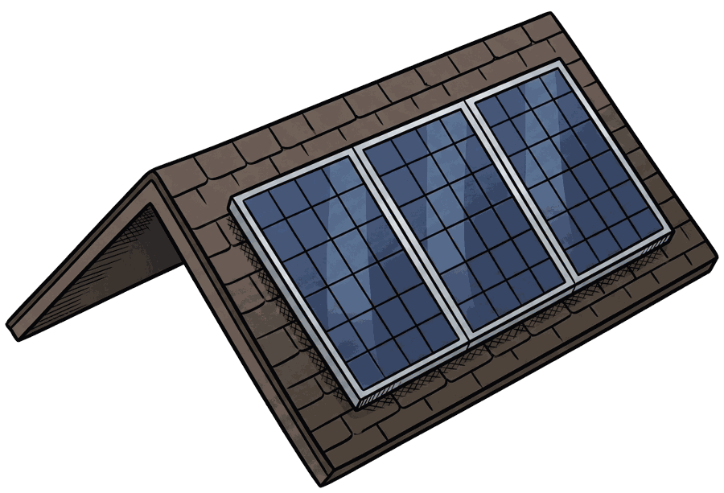
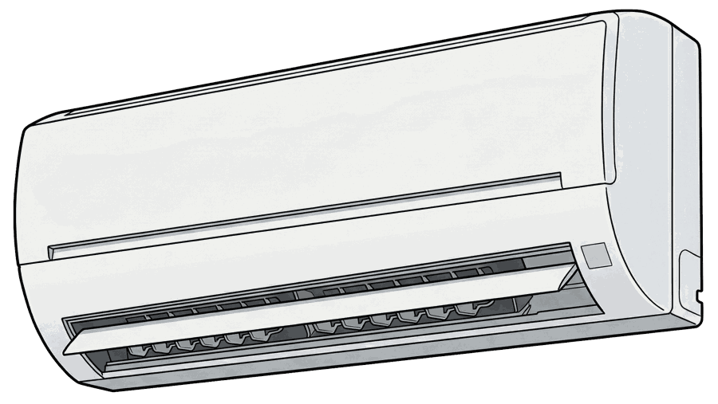
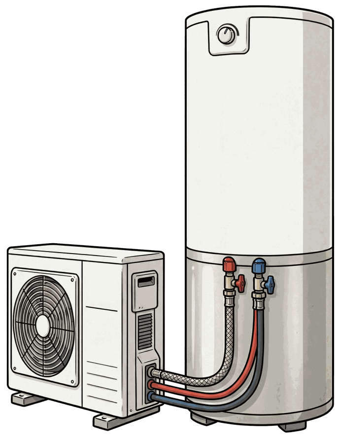
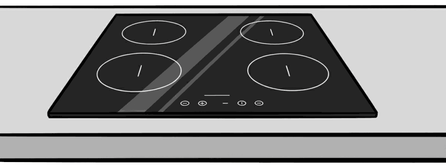
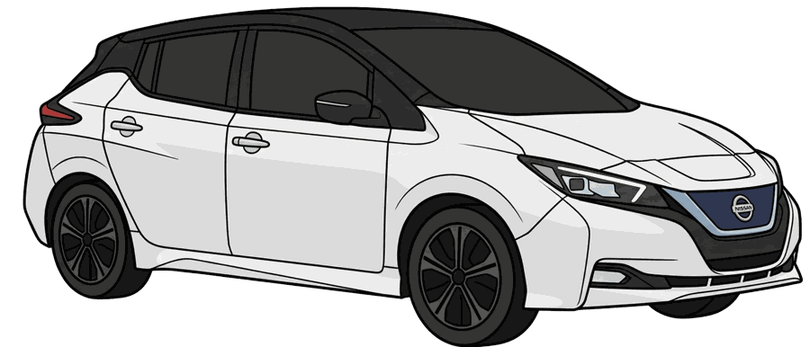
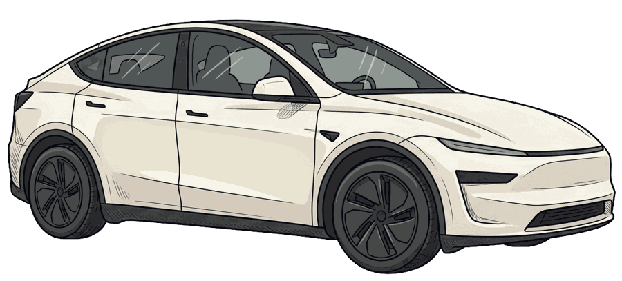
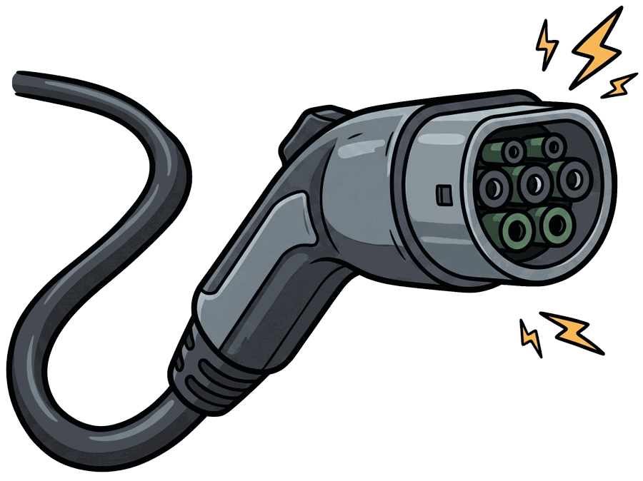

Why go electric?
A pathway to savings for households, economic growth for the community, reduced emissions and greater resilience.
Christchurch has crossed the electrification tipping point, where homes can save money and reduce their emissions by going electric. The technology is proven, the economics stack up and the transition is already underway. But plenty of households are still paying more than they need to by running on fossil fuels.
Figures on this page come from Rewiring Aotearoa’s Christchurch city regional report (v1.0, October 2026). Read the full report.
The opportunity for Christchurch
$3.1mbill savings every day, or $1.1 billion every year, from electrifying homes and vehicles
$7,600energy bill savings per household, every year
$3,700net savings per household every year, including upfront costs
419,000fossil fuel machines (cars, heaters and cooktops) in Christchurch homes
740,000tonnes of CO₂e avoided every year
5,100new local jobs created
By 2040, Christchurch households could collectively save $8.4 billion on energy bills, or $5.5 billion net after upfront costs and interest. The earlier homes make the switch, the more they save.
Assumes homes upgrade appliances to electric and 80% add solar and batteries. Net savings include upfront costs and interest.
Where the money goes
$2.1 million spent every day on fossil fuels
That’s $770 million a year from Christchurch households alone. Most of it is imported, so the money leaves the local economy, and fossil fuel prices have risen faster than inflation.
$3.1 million saved every day
Electrifying appliances and vehicles, with 80% adopting rooftop solar and batteries, would cut household energy bills from $1.9 billion to $810 million a year.
A fossil fuel home loses out on $7,600 a year
An average Christchurch home using LPG appliances and two petrol vehicles spends about $11,740 a year on energy and running costs. A home with electric heating and cooking, two EVs, solar and a battery spends about $4,130.
Even with upfront costs and loan repayments included, an all-electric Christchurch home is still $3,700 a year better off, or about $55,000 over 15 years.
Based on 2026 energy prices, excluding upfront costs. Net figure includes upfront costs and interest at 5.5% a year, using 15-year average forward energy prices in 2026 dollars.
What to switch, and what it saves

Solar and batteries
$37,500
saved on bills over 15 years ($2,500 a year) with 9 kW of solar and a 10 kWh battery
Solar pays back well in Christchurch, even in shaded areas. With solar, a household pays an effective 12 c/kWh when financed at 5.5%, against the 26 c/kWh grid rate. Panels last 30+ years, and a battery (about 15 years, roughly 10-year warranty) keeps essential appliances running in an outage. The 15-year figure is $2,500 a year over 15 years, before installation costs.

Heat pumps
$32,000
saved over 15 years ($1,750 a year) versus a flued LPG heater, including upfront costs
Heat pumps use around 75% less energy than gas heaters for the same warmth, and they cool in summer too. There are 27,100 LPG heaters in Christchurch homes.

Hot water heat pumps
$9,100
saved over 15 years ($750 a year) versus LPG instant, including upfront costs
Water heating is around 30% of an average home’s energy load. A hot water heat pump has a higher upfront cost but the lowest ongoing bills, and can heat water when power is cheapest or your solar is generating. There are 21,700 LPG water heaters in Christchurch.

Induction cooking
$1,900
saved in bills over 15 years ($118 a year), LPG to induction
Electric cooking costs less and produces far fewer emissions. Gas cooking also releases pollutants indoors, linked nationally to 200+ premature deaths and 3,200+ child asthma cases a year. There are 23,000 LPG cooktops in Christchurch.
Savings compare the electric option with the fossil fuel equivalent over 15 years, based on Rewiring Aotearoa modelling for Christchurch. Yearly figures are the difference in yearly bills at the report’s prices, so they won’t multiply exactly to the 15-year totals, which use forecast energy prices. Your own results will depend on your home, usage and equipment.
It also depends on what you drive
Christchurch drivers average 200 km a week, well within an EV’s range. Switching saves about $1,600 a year including road user charges. There are 347,000 petrol and diesel cars in Christchurch. Charging at home costs roughly half what you’d spend on petrol or diesel.
How much you save depends on the vehicle. Here is how a small car, a medium SUV and a ute compare in Christchurch.

Small car
$2,000 a year
electric, against $3,100 for petrol
Over 15 years a new electric small car costs about $67,600, against $81,500 for petrol and $75,200 for a petrol hybrid. Yearly emissions drop from 1,830 kg to 140 kg of CO₂e.

Medium SUV
$2,100 a year
electric, against $3,600 for petrol
Over 15 years a new electric medium SUV costs about $88,800, against $101,500 for petrol. Yearly emissions drop from 2,210 kg to 150 kg of CO₂e.
Utes
$2,500 a year
electric, against $4,300 for diesel
Over 15 years a new electric ute costs about $108,500, against $123,500 for diesel. Yearly emissions drop from 2,920 kg to 180 kg of CO₂e.

Charging is easy
80%
of EV owners do more than half their charging at home
60% trickle charge from a standard three-pin plug, and public chargers are at least every 75 km on 97% of New Zealand highways.
Yearly bills include fuel or electricity, road user charges and maintenance. 15-year costs include upfront costs for new vehicles. Reliable secondhand EVs typically cost from $12,000 to $50,000. Based on Rewiring Aotearoa modelling.
Emissions and jobs
740,000 tonnes of CO₂e avoided every year, equivalent to 5 million one-way flights per passenger from Auckland to Queenstown.
5,100 local jobs created through extra installation work and savings flowing through the community. That’s one job for every 80 Christchurch residents.
Local stories from Christchurch
Christchurch households have already made the switch. Hear what they changed, what it cost and what they’re saving now.
Michael & Leeza$5,160 saved per yearRead the case study (PDF) →
Lyn D$3,156 saved per yearRead the case study (PDF) →
Tisch whānau$2,880 saved per yearRead the case study (PDF) →
Your local community voice
Volunteer-run community groups, driven by locals for locals, are making it easier for people across Christchurch to electrify their lives. Electrify Christchurch is part of this network of electric communities, running events, leading local advocacy and giving advice to households.
Get involvedFind your nearest groupAbout the data
Unless otherwise stated, data is from Rewiring Aotearoa’s independent, peer-reviewed modelling. Rewiring Aotearoa is an independent, non-partisan non-profit working on energy, climate and electrification research. See the Electric Homes & Vehicles Report 2026 for the full analysis. Vehicle air pollution and gas cooking health figures come from the Ministry for the Environment (Our Air 2024) and EECA (2025). EV charging figures are from Consumer NZ, Powerswitch and the Ministry of Transport.